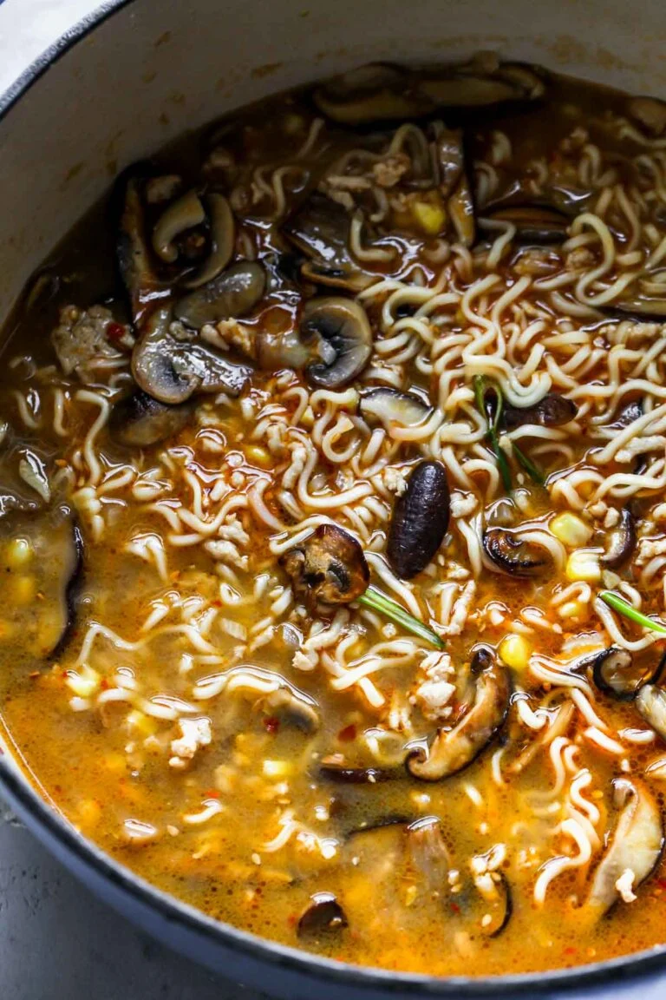

Spicy Ramen

Description
This Spicy Miso Ramen recipe features an umami-rich broth, shiitake mushrooms,
and sweet pops of corn to balance the spice. Ready in 45 minutes, this easy homemade ramen recipe is pure comfort.
Ingredients
Protein (Chicken, Pork, Tofu, or Seitan)
Steps
- Cook Protein
- Prep Veggies
- Sauté Mushrooms and Aromatics
- Simmer Broth
- Boil Noodles
- Hard Boil Egg
- Add protein, mushrooms, corn, and scallions

- Plate and Enjoy!
Home